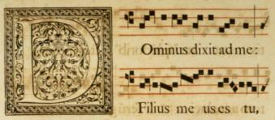

Music Cataloging
Guidelines for Determining Formats of Printed Materials with Music
All items in the M-ML-MT classification range go to MUS (the official
location for the Scheide Music Library) if not specifically indicated
otherwise. In particular, the Firestone stacks should no longer hold
anything in this range, and no more such material should be cataloged for
F.
All printed music items (scores, sheet music, whatchamcallit) are to be
cataloged by the music cataloger, in the M or MT range. Such materials upon
being received or discovered (see below) are to be placed on the two
middle shelves behind Jeffrey Luttrell's desk (the two shelves below the
blue paperback New Grove). These shelves are labeled. Items with LC
copy go on the upper shelf; items with member or no copy go on the lower
shelf.
M
M is used for printed music itself, from lead sheets and songbooks to
full orchestral scores. Any music-related item consisting chiefly of
notated music that could conceivably be performed off the page would be a
candidate for M. It's easy to be misled, however, by the following
sorts of items:
- books about music with extensive musical examples (sometimes in a
separate volume!) In general, if the musical examples are not of
complete performable pieces--e.g. extended quotations, transcriptions of
recordings--the item will count as a plain old book about music rather
than as a collection of printed music, and should be classified
appropriately, usually in ML or MT.
- collections of music with extensive prefatory material. Such
collections often have titles that call attention to the collection
itself rather to the subject-matter of the research surrounding it. The
prefatory material will generally be chiefly bibliographical or
biographical in nature, and will not take up more than the first third of
the book (first half for shorter books) Finally, the collection will
consist of performable pieces as a rule.
- folksong anthologies, chant books and other collections of
self-contained single-line tunes with extensive surrounding annotations.
If the tunes and their texts and/or annotations take up the greater part
of the book, these will generally be considered music rather than books
on music. However, if the tunes are not complete or there are no tunes,
the book is to be considered as a collection of texts and classified in
the appropriate range. This also applies to librettos.
- thematic catalogs. These consist of numerous fragments (usually
2-4 opening bars) of melodies embedded in bibliographical material.
These are not counted as printed music, but as plain old books about
music.
- facsimiles of medieval manuscripts, usually liturgical, in neumatic
notation. There should be an indication that this is indeed a facsimile
of a musical manuscript in the surrounding material, even if there just
seems to be a lot of squiggles under the words. [See example at right]. If in doubt, ask the Music Cataloger.
- instrumental or vocal method books and studies. Generally
self-evident from the title page. These count as printed music, though
they go in the MT range.
ML
ML is used for books about music (biographies, histories, reference
works, etc.) These should be incorporated into your regular workflow. A
minor exception may be made for items in the ML410-ML429 range, as
already directed in ML410-ML429.
MT
MT is used for how-to books. Theory and music-appreciation textbooks
(up to MT 170) are again to be treated like a plain old book, however
extensive the musical examples. For instrumental and vocal methods (MT
175-end) see above; but if it looks like a plain old book treat it like a
plain old book.
Added volumes
Added volumes, printed or recorded, are treated like other added
volumes. There is a specially labeled shelf for them.
|